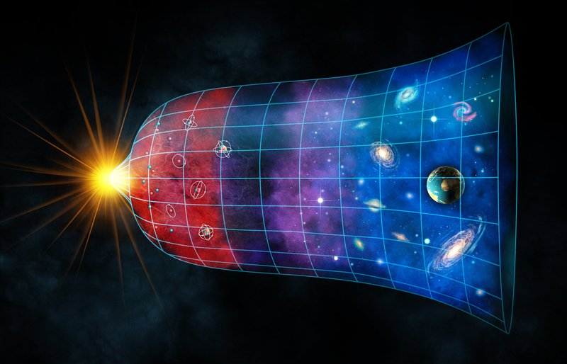
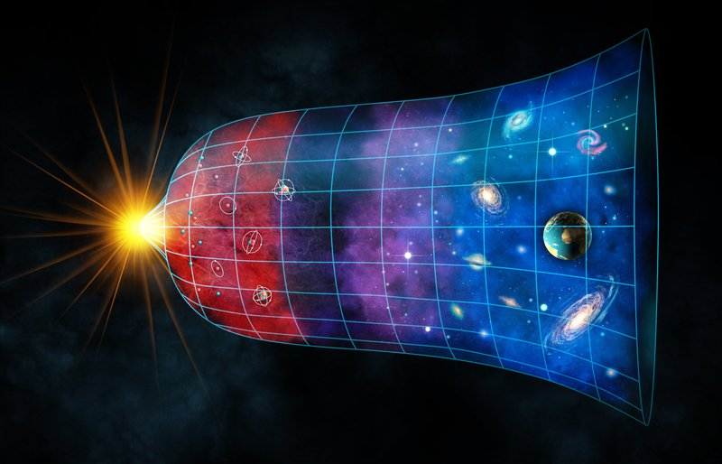
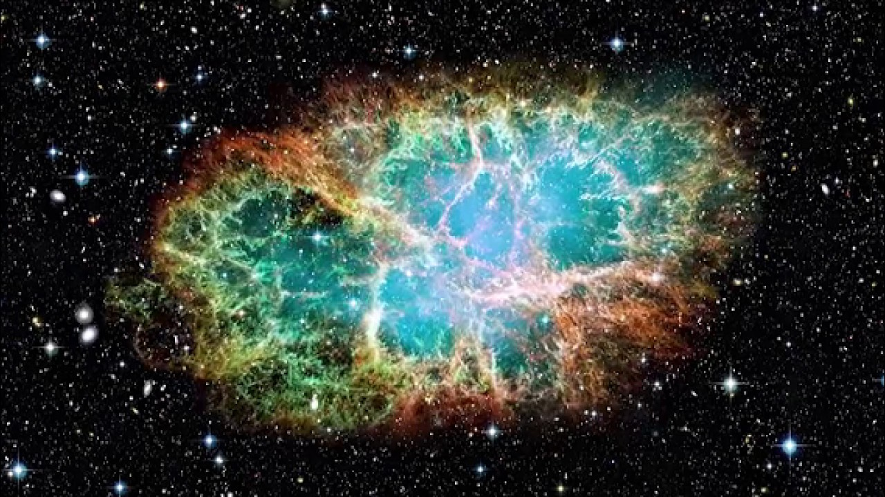

Header tree
Dannelse af universet og solsystemet
-
Dannelse af universet
-
Et af menneskehedens største spørgsmål omhandler dets eksistens, Hvor kommer vi fra? Hvad er grunden til vores eksistens? Man har gennem hele ens folkeskole tid været vant til at høre om hvorledes Gud skabte verden, naturen dyrene og alt hvad dette indebærer på 7 dage. På samme måde har flere andre religioner et bud på Jorden og universets dannelse. Boshongo folket fra det centrale Afrika mener at guden Bumba en dag fik ondt i maven og af den grund kastede op. Af opkastet kom solen. Dette var dog ikke helt nok til at Mumba fik det bedre, så han kastede op igen af af opkasten kom månen og stjernerne. Igen var dette ikke nok til at Mumba fik det bedre. Han kastede således op et par gange igen, hvilket resulterede i Jorden, dyrene og til sidst mennesket opstod. Disse teologiske skabelsesberetninger fik mennesket til at stille endnu flere spørgsmål. Hvad lavede Gud før han skabte verden? Hvilket skabte store debatter blandt de store filosoffer.
-
Det er her fysikken kommer med den mest ansete beretning hidtil. Universet blev skabt engang for omkring 14 milliarder år siden, under det Stephen Hawking kalder The Big Bang. Universet var en i en stor tæthed og høj temperatur samlet i det man kalder Singularitet. Gennem en rækker reaktioner “ekspolderede” alt lige pludselig, og universet ekspanderede gevaldigt. Det var heraf stjerner, galakser og alt stof kom til at eksistere, og var begyndelsen af universet. Igen gav dette anledning til spørgsmål, som Hvad var der før begyndelsen?
-
Stephen Hawking svarer således: “in 1915, Einstein introduced his revolutionary General Theory of Relativity. In this, space and time were no longer Absolute, no longer a fixed background to events. Instead, they were dynamical quantities that were shaped by the matter and energy in the universe. They were defined only within the universe, so it made no sense to talk of a time before the universe began. It would be like asking for a point south of the South Pole.”. Hvilket understreger pointen om universets singularitet før Big Bang.
-
-
Dannelse af solsystemet
-
Vores sol er blevet dannet i en sky af kold gas og støv, som kollapser. Dette kollaps kan ske af en supernovaeksplosion, af en nærliggende stor stjerne, dette kan være en af grundene til at ligevægten mellem gastrykket og tyngdekraften i skyen forstyrres, og på den måde kan der ske stjernedannelse, dette vil ske således at der vil blive dannet en stjernehob, hvor alle stjerne er næsten lige gamle. I skyen vil der blive dannet nogle lokale centre, hvor der vil være lidt mere gas og støv end i den anden dele af skyen, dette vil lave en lille fortætning, som vil skabe en tyngdekraft, da tyngdekraften vil overstige kraften fra gastrykket, og dette medføre at stoffet vil blive tiltrukket, hvilket vil skabe større tyngdekraft, hvilket gøre at endnu mere stof bliver trykket ind mod fortætningen. Det der sker er at der vil være en lille rotation omkring kernen i denne tiltrækning mekanisme. Denne rotation vil give anledning til et impulsmoment, hvilket betyder at stoffet vil rotere hurtigere jo tættet det kommer på kerne af stjerne. Denne rotation gør at stoffet samler sig i en skive rundt om den nydannet stjerne.
-
En planet dannes i den skive af kold gas og støv der omkredser solen, og det sker ved at små støvpartikler støder sammen og på den måde vokser støvpartiklerne sig større, når disse er stor nok, vokset sig til stor nok klippestykker, dannes der en planetesimaler, en asteroide lignende himmellegeme, disse planetesimaler vil samle sig i koncentriske ringe (bevæge sig i samme plan om et fælles centrum, som her vil være solen) for at blive til nogle større protoplaneter. Her vil proton planeterne ”konkurrerer” om hvilken en der er størst, hvorefter vil den største tiltrække de resterende protoplaneter, ind i sin koncentriske ring, hvor en planet så vil blive skabt. Tættest på sol vil vi ha klippeplaneterne, altså Merkur, Venus, Jorden og Mars, disse planter kaldes klippeplaneter, da de til forskel for gasplaneterne, er dannet af klippestykker.
-
Længer væk fra vores sol, vil der være en del koldere, og disse planeter, vil blive dannet på større afstand i den protoplanetare skive. Da temperaturen er så meget lavere vil molekylerne fra gasse kan fryse ud på overfladen ad støvkornene og så blive til is. Isen hjælper til med at få støvkornene når de kollidere nemmere hænger sammen, og hjælper med at gøre klippestykkerne mere massive. Dette gør at klippe stykkerne kan vokse sig endnu større og vil derfor havde letter ved at tiltrække gassen fra den protoplanetre skive. Altså planeterne Jupiter, Saturn, Uranus og Neptun er alle sammen gasplaneter.
-
Yderlig mere vil der efter at planterne er blevet skab, vil der rundt om hver planet samledes en sky af støv og gas, som der vil i det ydre solsystem blive til måner der omgiver planterne som Jupiter, Saturn, Uranus og Neptun.
-
 

big bang
Ovenfor ses 2 illustrationer af Big Bang. Øverste illustration er lavet af en kunstner, mens den nederste er lavet af astronomer.
